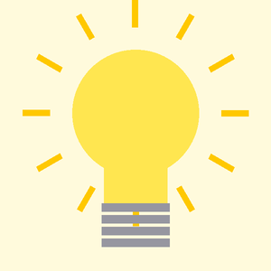
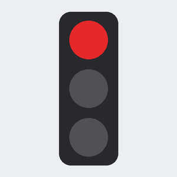
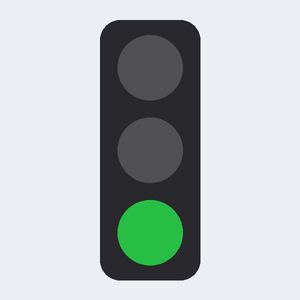
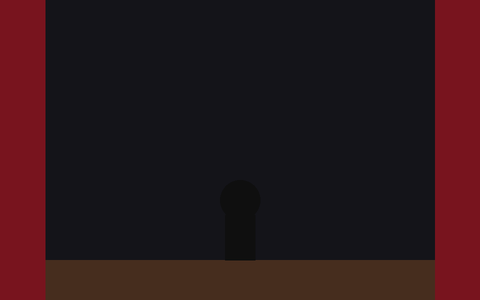
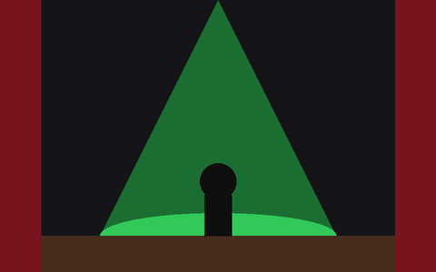

Blok 7. Stan aplikacji: przełączniki, cykle i widoczność
Faza II — łączenie umiejętności W trakciePrzechowujesz stan typu włączone/wyłączone i numer fazy, zmieniasz tekst samego przycisku, kolory z kodu, widoczność i dostępność kontrolek. Wszystko, co zależy od stanu, odświeżasz w jednej metodzie.
1. Cel
Po wykonaniu tego bloku będziesz potrafił:
- przełączać stan
boolean(stan = !stan) i od niego uzależniać tekst przycisku, obraz i napisy, - przechodzić cyklicznie po fazach zapisanych w tablicach (
(faza + 1) % długość), - zmieniać z kodu kolor tekstu i tła (
Color.parseColor,setTextColor,setBackgroundColor), - ukrywać/pokazywać elementy (
setVisibility) i blokować przyciski (setEnabled), - zbierać całe odświeżanie ekranu w jednej metodzie zależnej od stanu.
Plan czasu (4 × 45 min = 180 min)
| Przypomnienie | 15 min |
| Przykład | 10 min |
| Mikroćwiczenia | 25 min |
| Zadanie prowadzone | 35 min |
| Zadanie samodzielne | 35 min |
| Zadanie INF.04 | 50 min |
| Checklista + mini-test | 10 min |
| Razem | 180 min |
|---|
Powiązanie z arkuszami: przełącznik Włącz/Wyłącz ze zmianą tekstu przycisku — Arkusz_13; cykl po 3 tekstach z tablicy — Arkusz_07; wzorzec W1 w wariancie „flaga” i „indeks cykliczny”.
2. Krótkie przypomnienie
Przełącznik (Arkusz_13: „Włącz” ↔ „Wyłącz”)
private boolean wlaczony = false;
...
btnOdkurzacz.setOnClickListener(v -> {
wlaczony = !wlaczony; // zamiana na przeciwny
btnOdkurzacz.setText(wlaczony ? "Wyłącz" : "Włącz"); // tekst SAMEGO przycisku
tvStan.setText(wlaczony ? "Odkurzacz włączony" : "Odkurzacz wyłączony");
});warunek ? A : B — operator warunkowy: jeśli warunek prawdziwy → A, inaczej → B. Zastępuje krótkie if/else.
Cykl faz (Arkusz_07: „Dzień dobry” → „Good morning” → „Buenos dias” → …)
private final String[] teksty = {"Dzień dobry", "Good morning", "Buenos dias"};
private int indeks = 0;
...
indeks = (indeks + 1) % teksty.length;
tvCytat.setText(teksty[indeks]);Kolor, widoczność, dostępność
tvNapis.setTextColor(Color.parseColor("#2E7D32")); // import android.graphics.Color
ukladGlowny.setBackgroundColor(Color.parseColor("#121212"));
tvNapis.setTextColor(Color.WHITE); // gotowe stałe: WHITE, BLACK, RED…
tvSzczegoly.setVisibility(View.GONE); // znika i nie zajmuje miejsca
tvSzczegoly.setVisibility(View.INVISIBLE); // niewidoczny, ale miejsce zostaje
tvSzczegoly.setVisibility(View.VISIBLE); // import android.view.View
btnKolor.setEnabled(false); // przycisk nie reaguje, jest wyszarzonyW XML odpowiedniki: android:visibility="gone", android:enabled="false".
Gdy kilka przycisków zmienia ten sam stan, nie powielaj kodu ustawiania obrazów i napisów. Każdy przycisk zmienia tylko pola, a potem wywołuje wspólne odswiez(), które na podstawie pól ustawia cały ekran.
Ćwiczenie natychmiastowe: w przykładzie zamień if/else na trzy linie z operatorem ? :.
3. Przykład
Przełącznik z obrazem: jedna flaga wlaczone steruje obrazem, napisem i tekstem przycisku.

<?xml version="1.0" encoding="utf-8"?>
<LinearLayout xmlns:android="http://schemas.android.com/apk/res/android"
android:id="@+id/main"
android:layout_width="match_parent"
android:layout_height="match_parent"
android:orientation="vertical"
android:padding="16dp">
<ImageView
android:id="@+id/ivZarowka"
android:layout_width="match_parent"
android:layout_height="220dp"
android:contentDescription="Żarówka"
android:src="@drawable/zarowka_wyl" />
<TextView
android:id="@+id/tvStan"
android:layout_width="match_parent"
android:layout_height="wrap_content"
android:gravity="center"
android:text="Światło wyłączone"
android:textSize="22sp" />
<Button
android:id="@+id/btnPrzelacz"
android:layout_width="wrap_content"
android:layout_height="wrap_content"
android:layout_gravity="center_horizontal"
android:text="WŁĄCZ" />
</LinearLayout>package com.example.egzamin;
import android.os.Bundle;
import android.widget.Button;
import android.widget.ImageView;
import android.widget.TextView;
import androidx.appcompat.app.AppCompatActivity;
public class MainActivity extends AppCompatActivity {
private boolean wlaczone = false; // stan przełącznika
@Override
protected void onCreate(Bundle savedInstanceState) {
super.onCreate(savedInstanceState);
setContentView(R.layout.activity_main);
ImageView ivZarowka = findViewById(R.id.ivZarowka);
TextView tvStan = findViewById(R.id.tvStan);
Button btnPrzelacz = findViewById(R.id.btnPrzelacz);
btnPrzelacz.setOnClickListener(v -> {
wlaczone = !wlaczone; // zmiana stanu na przeciwny
if (wlaczone) {
ivZarowka.setImageResource(R.drawable.zarowka_wl);
tvStan.setText("Światło włączone");
btnPrzelacz.setText("WYŁĄCZ");
} else {
ivZarowka.setImageResource(R.drawable.zarowka_wyl);
tvStan.setText("Światło wyłączone");
btnPrzelacz.setText("WŁĄCZ");
}
});
}
}4. Mikroćwiczenia
Ćwiczenie 7.1 — Operator warunkowy
Zapisz jedną linią: jeśli glosno jest prawdą, napis „Głośno”, inaczej „Cicho”.
Sprawdź odpowiedź
tvGlosnosc.setText(glosno ? "Głośno" : "Cicho");
Ćwiczenie 7.2 — Co się stanie?
boolean stan = false; Kliknięcie wykonuje stan = !stan;. Jaki jest stan po 5 kliknięciach? A po 6?
Sprawdź odpowiedź
Po 5 → true (nieparzysta liczba zmian), po 6 → false.
Ćwiczenie 7.3 — GONE czy INVISIBLE?
Pod ukrywanym napisem jest przycisk. Chcesz, aby po ukryciu napisu przycisk „podjechał” do góry. Której stałej użyjesz?
Sprawdź odpowiedź
View.GONE — element nie zajmuje miejsca. INVISIBLE zostawia pustą przestrzeń.
Ćwiczenie 7.4 — Kolor z tablicy
Masz String[] kolory = {"#C62828", "#2E7D32"}; i int i. Ustaw kolor tekstu napisu tvInfo na kolory[i].
Sprawdź odpowiedź
tvInfo.setTextColor(Color.parseColor(kolory[i])); — sam napis „#C62828” to jeszcze nie kolor; parseColor zamienia go na int.
Ćwiczenie 7.5 — Zablokuj przycisk
Przycisk „KOLOR” ma działać tylko wtedy, gdy światło jest włączone. Napisz jedną linię wywoływaną po każdej zmianie flagi wlaczone.
Sprawdź odpowiedź
btnKolor.setEnabled(wlaczone); — wartość flagi przekazana wprost.
5. Zadanie prowadzone
Sygnalizator świetlny
Trzy fazy światła w pętli. Każda faza ma swój obraz, komunikat i kolor napisu — trzy tablice równoległe i jeden indeks.


Fazy: 0 — sygnal_czerwone, „STÓJ”, #C62828; 1 — sygnal_zielone, „JEDŹ”, #2E7D32; 2 — sygnal_zolte, „UWAGA”, #F9A825. Po fazie 2 wraca faza 0.
Kroki:
- XML: tytuł,
ImageView260dp (obraz startowy czerwony), napis komunikatu 34sp pogrubiony w kolorze#C62828, przycisk na całą szerokość (#37474F). - Java: trzy tablice (
int[],String[],String[]) i polefaza. - Kliknięcie: nowa faza modulo, potem obraz, tekst i kolor z tablic.
Zasoby do zadania


Pobierz wszystkie: zasoby_b07-prowadzone.zip. Obrazy skopiuj do app/src/main/res/drawable (nazwy: małe litery, bez spacji i myślników).
Pomoc — otwieraj po kolei i tylko wtedy, gdy utkniesz:
Poziom 1 — kierunek
Stan to tylko jedna liczba: numer fazy. Wszystko inne odczytujesz z tablic pod tym numerem.
Poziom 2 — konkretna wskazówka
tvKomunikat.setTextColor(Color.parseColor(kolory[faza])); — import android.graphics.Color.
Poziom 3 — pseudokod / struktura
tablice: obrazy[3], komunikaty[3], kolory[3]; faza = 0
ZMIEŃ: faza = (faza + 1) % 3
obraz ← obrazy[faza]; tekst ← komunikaty[faza]; kolor ← kolory[faza]Poziom 4 — fragment implementacji
btnZmien.setOnClickListener(v -> {
faza = (faza + 1) % obrazy.length;
ivSygnal.setImageResource(obrazy[faza]);
tvKomunikat.setText(komunikaty[faza]);
tvKomunikat.setTextColor(Color.parseColor(kolory[faza]));
});Poziom 5 — pełne rozwiązanie
<?xml version="1.0" encoding="utf-8"?>
<LinearLayout xmlns:android="http://schemas.android.com/apk/res/android"
android:id="@+id/main"
android:layout_width="match_parent"
android:layout_height="match_parent"
android:orientation="vertical"
android:background="#ECEFF1"
android:padding="16dp">
<TextView
android:id="@+id/tvTytul"
android:layout_width="match_parent"
android:layout_height="wrap_content"
android:gravity="center"
android:text="Skrzyżowanie"
android:textSize="28sp"
android:textStyle="bold" />
<ImageView
android:id="@+id/ivSygnal"
android:layout_width="match_parent"
android:layout_height="260dp"
android:layout_marginVertical="10dp"
android:contentDescription="Sygnalizator"
android:src="@drawable/sygnal_czerwone" />
<TextView
android:id="@+id/tvKomunikat"
android:layout_width="match_parent"
android:layout_height="wrap_content"
android:gravity="center"
android:text="STÓJ"
android:textColor="#C62828"
android:textSize="34sp"
android:textStyle="bold" />
<Button
android:id="@+id/btnZmien"
android:layout_width="match_parent"
android:layout_height="wrap_content"
android:layout_marginTop="16dp"
android:backgroundTint="#37474F"
android:text="ZMIEŃ ŚWIATŁO" />
</LinearLayout>package com.example.egzamin;
import android.graphics.Color;
import android.os.Bundle;
import android.widget.Button;
import android.widget.ImageView;
import android.widget.TextView;
import androidx.appcompat.app.AppCompatActivity;
public class MainActivity extends AppCompatActivity {
// kolejność faz: czerwone -> zielone -> żółte -> czerwone ...
private final int[] obrazy = {R.drawable.sygnal_czerwone, R.drawable.sygnal_zielone, R.drawable.sygnal_zolte};
private final String[] komunikaty = {"STÓJ", "JEDŹ", "UWAGA"};
private final String[] kolory = {"#C62828", "#2E7D32", "#F9A825"};
private int faza = 0;
private ImageView ivSygnal;
private TextView tvKomunikat;
@Override
protected void onCreate(Bundle savedInstanceState) {
super.onCreate(savedInstanceState);
setContentView(R.layout.activity_main);
ivSygnal = findViewById(R.id.ivSygnal);
tvKomunikat = findViewById(R.id.tvKomunikat);
Button btnZmien = findViewById(R.id.btnZmien);
btnZmien.setOnClickListener(v -> {
faza = (faza + 1) % obrazy.length;
ivSygnal.setImageResource(obrazy[faza]);
tvKomunikat.setText(komunikaty[faza]);
tvKomunikat.setTextColor(Color.parseColor(kolory[faza]));
});
}
}Pliki rozwiązania: rozwiazania/b07_prowadzone/ (pierwsza linia package musi odpowiadać Twojemu projektowi).
6. Zadanie samodzielne
Czytnik wiadomości: tryb nocny i szczegóły
Dwa niezależne przełączniki: jeden zmienia kolory całego ekranu, drugi pokazuje i ukrywa szczegóły.
- „TRYB NOCNY”: tło całego rozkładu
#121212, tytuł i treść#E0E0E0, tekst przycisku zmienia się na „TRYB DZIENNY”. Ponowne kliknięcie przywraca biel, czerń i napis „TRYB NOCNY”. - „POKAŻ SZCZEGÓŁY”: napis szczegółów (szary) pojawia się pod treścią, przycisk zmienia tekst na „UKRYJ SZCZEGÓŁY”. Na starcie szczegóły są ukryte i nie zajmują miejsca.
- Rozkład główny pobierz w Javie jego identyfikatorem (
R.id.main).
Pomoc — otwieraj po kolei i tylko wtedy, gdy utkniesz:
Poziom 1 — kierunek
Dwie flagi boolean, dwa przyciski. Dla koloru przygotuj dwie zmienne pomocnicze (int tlo, int tekst) wybierane operatorem ? :.
Poziom 2 — konkretna wskazówka
Na starcie w XML: android:visibility="gone" dla szczegółów. W kodzie: tvSzczegoly.setVisibility(szczegolyWidoczne ? View.VISIBLE : View.GONE);.
Poziom 3 — pseudokod / struktura
TRYB: nocny = !nocny
tlo = nocny ? #121212 : biały
tekst = nocny ? #E0E0E0 : czarny
ustaw tło rozkładu, kolory dwóch napisów, tekst przycisku
SZCZEGÓŁY: widoczne = !widoczne; widoczność; tekst przyciskuPoziom 4 — fragment implementacji
int tlo = trybNocny ? Color.parseColor("#121212") : Color.WHITE;
int tekst = trybNocny ? Color.parseColor("#E0E0E0") : Color.BLACK;
ukladGlowny.setBackgroundColor(tlo);
tvTytul.setTextColor(tekst);
tvTresc.setTextColor(tekst);
btnTryb.setText(trybNocny ? "TRYB DZIENNY" : "TRYB NOCNY");Poziom 5 — pełne rozwiązanie
<?xml version="1.0" encoding="utf-8"?>
<LinearLayout xmlns:android="http://schemas.android.com/apk/res/android"
android:id="@+id/main"
android:layout_width="match_parent"
android:layout_height="match_parent"
android:orientation="vertical"
android:background="#FFFFFF"
android:padding="16dp">
<TextView
android:id="@+id/tvTytul"
android:layout_width="match_parent"
android:layout_height="wrap_content"
android:text="Czytnik wiadomości"
android:textColor="#000000"
android:textSize="28sp"
android:textStyle="bold" />
<TextView
android:id="@+id/tvTresc"
android:layout_width="match_parent"
android:layout_height="wrap_content"
android:layout_marginTop="10dp"
android:text="Jutro zajęcia w pracowni 14 zaczynają się o 8:00. Zabierz pendrive z projektem."
android:textColor="#000000"
android:textSize="18sp" />
<TextView
android:id="@+id/tvSzczegoly"
android:layout_width="match_parent"
android:layout_height="wrap_content"
android:layout_marginTop="10dp"
android:text="Nadawca: wychowawca · wysłano 7:15 · priorytet: wysoki"
android:textColor="#808080"
android:visibility="gone" />
<LinearLayout
android:layout_width="match_parent"
android:layout_height="wrap_content"
android:layout_marginTop="20dp"
android:orientation="horizontal">
<Button
android:id="@+id/btnTryb"
android:layout_width="0dp"
android:layout_height="wrap_content"
android:layout_weight="1"
android:layout_marginEnd="5dp"
android:text="TRYB NOCNY" />
<Button
android:id="@+id/btnSzczegoly"
android:layout_width="0dp"
android:layout_height="wrap_content"
android:layout_weight="1"
android:layout_marginStart="5dp"
android:text="POKAŻ SZCZEGÓŁY" />
</LinearLayout>
</LinearLayout>package com.example.egzamin;
import android.graphics.Color;
import android.os.Bundle;
import android.view.View;
import android.widget.Button;
import android.widget.LinearLayout;
import android.widget.TextView;
import androidx.appcompat.app.AppCompatActivity;
public class MainActivity extends AppCompatActivity {
private boolean trybNocny = false;
private boolean szczegolyWidoczne = false;
private LinearLayout ukladGlowny;
private TextView tvTytul, tvTresc, tvSzczegoly;
private Button btnTryb, btnSzczegoly;
@Override
protected void onCreate(Bundle savedInstanceState) {
super.onCreate(savedInstanceState);
setContentView(R.layout.activity_main);
ukladGlowny = findViewById(R.id.main);
tvTytul = findViewById(R.id.tvTytul);
tvTresc = findViewById(R.id.tvTresc);
tvSzczegoly = findViewById(R.id.tvSzczegoly);
btnTryb = findViewById(R.id.btnTryb);
btnSzczegoly = findViewById(R.id.btnSzczegoly);
btnTryb.setOnClickListener(v -> {
trybNocny = !trybNocny;
int tlo = trybNocny ? Color.parseColor("#121212") : Color.WHITE;
int tekst = trybNocny ? Color.parseColor("#E0E0E0") : Color.BLACK;
ukladGlowny.setBackgroundColor(tlo);
tvTytul.setTextColor(tekst);
tvTresc.setTextColor(tekst);
btnTryb.setText(trybNocny ? "TRYB DZIENNY" : "TRYB NOCNY");
});
btnSzczegoly.setOnClickListener(v -> {
szczegolyWidoczne = !szczegolyWidoczne;
tvSzczegoly.setVisibility(szczegolyWidoczne ? View.VISIBLE : View.GONE);
btnSzczegoly.setText(szczegolyWidoczne ? "UKRYJ SZCZEGÓŁY" : "POKAŻ SZCZEGÓŁY");
});
}
}Pliki rozwiązania: rozwiazania/b07_samodzielne/ (pierwsza linia package musi odpowiadać Twojemu projektowi).
7. Zadanie w stylu INF.04
Sterowanie oświetleniem sceny
Wykonaj aplikację mobilną do sterowania oświetleniem sceny. Do wykonania zadania wykorzystaj obrazy z archiwum zasoby_b07-inf.zip.
| INTERFEJS | Co musi znaleźć się na ekranie? |
| DANE | Co wpisuje / wybiera użytkownik? |
| ZDARZENIA | Co uruchamia działania? |
| LOGIKA | Co trzeba policzyć / sprawdzić / zmienić? |
| WYNIK | Co aplikacja wyświetla lub zmienia? |
| WYGLĄD | Kolory, rozmiary, marginesy, rozkłady? |
Porównaj swoją analizę z wzorcową
| INTERFEJS | tytuł, obraz sceny, 2 przyciski w rzędzie, napis stanu, napis koloru, autor |
| DANE | brak pól |
| ZDARZENIA | WŁĄCZ/WYŁĄCZ, KOLOR |
| LOGIKA | flaga włączenia; indeks koloru 0..2 cyklicznie; przycisk KOLOR aktywny tylko przy włączonym świetle; kolor zapamiętany po wyłączeniu |
| WYNIK | obraz zależny od flagi i koloru; tekst przycisku; „Stan: …”; „Kolor: …” w danym kolorze |
| WYGLĄD | tło #EEEEEE; tytuł #212121 biały; obraz 180dp przycięty; przyciski #FF6F00 białe pogrubione po równo; napisy 20sp; kolor pogrubiony |


Elementy aplikacji:
- Napis „Scena — oświetlenie”.
- Obraz sceny (w stanie początkowym
scena_ciemna). - Przyciski „WŁĄCZ” i „KOLOR” umiejscowione obok siebie.
- Napis „Stan: wyłączone”.
- Napis „Kolor: czerwony”.
- Napis „Autor: ”, dalej numer zdającego.
Działanie aplikacji:
- Przycisk „WŁĄCZ” działa jak przełącznik: po wybraniu jego treść zmienia się na „WYŁĄCZ”, napis stanu na „Stan: włączone”, a obraz na scenę w aktualnym kolorze. Ponowne wybranie przywraca „WŁĄCZ”, „Stan: wyłączone” i obraz
scena_ciemna. - Przycisk „KOLOR” zmienia kolor oświetlenia cyklicznie: czerwony → zielony → niebieski → czerwony … (obrazy
scena_czerwona,scena_zielona,scena_niebieska) i aktualizuje napis „Kolor: <nazwa>”. - Przycisk „KOLOR” jest nieaktywny, gdy oświetlenie jest wyłączone.
- Po wyłączeniu i ponownym włączeniu scena ma ostatnio wybrany kolor.
- Napis z nazwą koloru ma kolor czcionki odpowiadający kolorowi światła: #E63232, #32C85A, #3C6EF0.
Założenia aplikacji:
- Interfejs w XML; rozkład liniowy pionowy z zagnieżdżonym rozkładem poziomym dla przycisków.
- Tło strony #EEEEEE. Tytuł: tło #212121, biała czcionka, największa, marginesy wewnętrzne 10.
- Obraz: wysokość 180, na całą szerokość, może być przycięty. Obrazy zapisane w zasobach aplikacji.
- Przyciski: tło #FF6F00, biała pogrubiona czcionka, razem wypełniają szerokość (marginesy 10).
- Nazwy kolorów, obrazy i kody kolorów przechowywane w tablicach. Ustawianie wyglądu na podstawie stanu zrealizuj w jednej metodzie.
Zasoby do zadania


Pobierz wszystkie: zasoby_b07-inf.zip. Obrazy skopiuj do app/src/main/res/drawable (nazwy: małe litery, bez spacji i myślników).
Checklista zadania
Pomoc — otwieraj po kolei i tylko wtedy, gdy utkniesz:
Poziom 1 — kierunek
Stan aplikacji to dwa pola: boolean wlaczone i int kolor. Przyciski tylko zmieniają te pola i wywołują odswiez().
Poziom 2 — konkretna wskazówka
Przycisk nieaktywny na starcie: android:enabled="false" w XML; w odswiez(): btnKolor.setEnabled(wlaczone);.
Poziom 3 — pseudokod / struktura
WŁĄCZ : wlaczone = !wlaczone ; odswiez()
KOLOR : kolor = (kolor + 1) % 3 ; odswiez()
odswiez():
jeśli wlaczone: obraz = obrazyKolorow[kolor]; "Stan: włączone"; przycisk "WYŁĄCZ"
inaczej: obraz = scena_ciemna; "Stan: wyłączone"; przycisk "WŁĄCZ"
KOLOR aktywny = wlaczone
"Kolor: " + nazwyKolorow[kolor], kolor czcionki = kodyKolorow[kolor]Poziom 4 — fragment implementacji
private void odswiez() {
if (wlaczone) {
ivScena.setImageResource(obrazyKolorow[kolor]);
tvStan.setText("Stan: włączone");
btnZasilanie.setText("WYŁĄCZ");
} else {
ivScena.setImageResource(R.drawable.scena_ciemna);
tvStan.setText("Stan: wyłączone");
btnZasilanie.setText("WŁĄCZ");
}
btnKolor.setEnabled(wlaczone);
tvKolor.setText("Kolor: " + nazwyKolorow[kolor]);
tvKolor.setTextColor(Color.parseColor(kodyKolorow[kolor]));
}Poziom 5 — pełne rozwiązanie
<?xml version="1.0" encoding="utf-8"?>
<LinearLayout xmlns:android="http://schemas.android.com/apk/res/android"
android:id="@+id/main"
android:layout_width="match_parent"
android:layout_height="match_parent"
android:orientation="vertical"
android:background="#EEEEEE">
<TextView
android:id="@+id/tvTytul"
android:layout_width="match_parent"
android:layout_height="wrap_content"
android:background="#212121"
android:padding="10dp"
android:text="Scena — oświetlenie"
android:textColor="#FFFFFF"
android:textSize="28sp" />
<ImageView
android:id="@+id/ivScena"
android:layout_width="match_parent"
android:layout_height="180dp"
android:contentDescription="Scena"
android:scaleType="centerCrop"
android:src="@drawable/scena_ciemna" />
<LinearLayout
android:layout_width="match_parent"
android:layout_height="wrap_content"
android:layout_margin="10dp"
android:orientation="horizontal">
<Button
android:id="@+id/btnZasilanie"
android:layout_width="0dp"
android:layout_height="wrap_content"
android:layout_weight="1"
android:layout_marginEnd="5dp"
android:backgroundTint="#FF6F00"
android:text="WŁĄCZ"
android:textColor="#FFFFFF"
android:textStyle="bold" />
<Button
android:id="@+id/btnKolor"
android:layout_width="0dp"
android:layout_height="wrap_content"
android:layout_weight="1"
android:layout_marginStart="5dp"
android:backgroundTint="#FF6F00"
android:enabled="false"
android:text="KOLOR"
android:textColor="#FFFFFF"
android:textStyle="bold" />
</LinearLayout>
<TextView
android:id="@+id/tvStan"
android:layout_width="wrap_content"
android:layout_height="wrap_content"
android:layout_marginStart="10dp"
android:text="Stan: wyłączone"
android:textSize="20sp" />
<TextView
android:id="@+id/tvKolor"
android:layout_width="wrap_content"
android:layout_height="wrap_content"
android:layout_marginStart="10dp"
android:text="Kolor: czerwony"
android:textColor="#E63232"
android:textSize="20sp"
android:textStyle="bold" />
<TextView
android:id="@+id/tvAutor"
android:layout_width="match_parent"
android:layout_height="wrap_content"
android:layout_marginTop="20dp"
android:gravity="center"
android:text="Autor: 00000000000"
android:textColor="#808080" />
</LinearLayout>package com.example.egzamin;
import android.graphics.Color;
import android.os.Bundle;
import android.widget.Button;
import android.widget.ImageView;
import android.widget.TextView;
import androidx.appcompat.app.AppCompatActivity;
public class MainActivity extends AppCompatActivity {
private final int[] obrazyKolorow = {R.drawable.scena_czerwona, R.drawable.scena_zielona, R.drawable.scena_niebieska};
private final String[] nazwyKolorow = {"czerwony", "zielony", "niebieski"};
private final String[] kodyKolorow = {"#E63232", "#32C85A", "#3C6EF0"};
private boolean wlaczone = false;
private int kolor = 0;
private ImageView ivScena;
private TextView tvStan, tvKolor;
private Button btnZasilanie, btnKolor;
@Override
protected void onCreate(Bundle savedInstanceState) {
super.onCreate(savedInstanceState);
setContentView(R.layout.activity_main);
ivScena = findViewById(R.id.ivScena);
tvStan = findViewById(R.id.tvStan);
tvKolor = findViewById(R.id.tvKolor);
btnZasilanie = findViewById(R.id.btnZasilanie);
btnKolor = findViewById(R.id.btnKolor);
btnZasilanie.setOnClickListener(v -> {
wlaczone = !wlaczone;
odswiez();
});
btnKolor.setOnClickListener(v -> {
kolor = (kolor + 1) % nazwyKolorow.length;
odswiez();
});
}
private void odswiez() {
if (wlaczone) {
ivScena.setImageResource(obrazyKolorow[kolor]);
tvStan.setText("Stan: włączone");
btnZasilanie.setText("WYŁĄCZ");
} else {
ivScena.setImageResource(R.drawable.scena_ciemna);
tvStan.setText("Stan: wyłączone");
btnZasilanie.setText("WŁĄCZ");
}
btnKolor.setEnabled(wlaczone);
tvKolor.setText("Kolor: " + nazwyKolorow[kolor]);
tvKolor.setTextColor(Color.parseColor(kodyKolorow[kolor]));
}
}Pliki rozwiązania: rozwiazania/b07_inf/ (pierwsza linia package musi odpowiadać Twojemu projektowi).
8. Checklista
Sprawdź swoją aplikację z zadania INF.04 punkt po punkcie (krok 10 procedury).
9. Mini-test
10. Skończyłeś wcześniej?
Tryb stroboskopu
Dodaj trzeci przycisk „PULS”, który przy każdym kliknięciu ustawia losowy kolor (inny niż obecny). Losowanie: new Random().nextInt(3) — dokładniej w bloku 10.
Pralka i odkurzacz
Zbuduj w 20 minut ekran z Arkusza_13 bez obrazów: pole numeru prania (tylko liczby), „Zatwierdź”, „Numer prania: nie podano”; przycisk „Włącz”, „Odkurzacz wyłączony”, „Status: naładowany”. Logika: numer 1–12 ustawia napis; przełącznik Włącz/Wyłącz.
Kolor tła przycisku z kodu
Zmieniaj też kolor przycisku KOLOR na kolor aktualnego światła.
Wskazówka
btnKolor.setBackgroundTintList(ColorStateList.valueOf(Color.parseColor(kod))); — import android.content.res.ColorStateList.